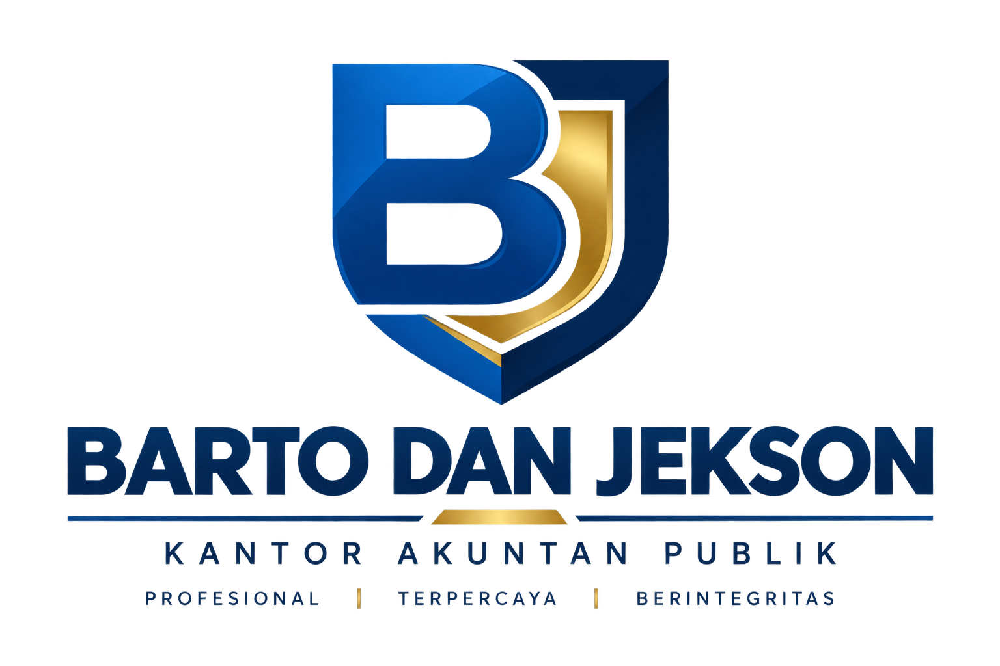

Kami memberikan layanan audit, akuntansi, perpajakan, dan konsultasi bisnis dengan menjunjung tinggi integritas, profesionalisme, dan kepercayaan.
Hubungi KamiPemeriksaan laporan keuangan secara independen dan profesional.
Penyusunan dan konsultasi laporan keuangan untuk bisnis Anda.
Konsultasi dan pendampingan perpajakan secara profesional.
BARTO DAN JEKSON merupakan Kantor Akuntan Publik yang memberikan layanan profesional di bidang audit, akuntansi, perpajakan, dan konsultasi bisnis.
Kami berkomitmen memberikan layanan yang objektif, independen, dan profesional untuk membantu klien meningkatkan kualitas informasi keuangan serta mendukung pengambilan keputusan bisnis yang tepat.
Menjunjung tinggi kejujuran dan etika dalam setiap pekerjaan.
Memberikan penilaian secara objektif dan bebas dari kepentingan pihak lain.
Memberikan layanan berdasarkan kompetensi dan standar profesional.
Membangun hubungan jangka panjang melalui layanan yang dapat dipercaya.
Solusi profesional untuk mendukung kebutuhan keuangan, akuntansi, perpajakan, dan bisnis Anda.
Pemeriksaan laporan keuangan secara independen, objektif, dan profesional.
Pelajari Lebih Lanjut →Jasa penyusunan dan konsultasi laporan keuangan untuk mendukung bisnis Anda.
Pelajari Lebih Lanjut →Konsultasi dan pendampingan perpajakan untuk membantu memenuhi kewajiban pajak.
Pelajari Lebih Lanjut →Konsultasi bisnis, keuangan, dan manajemen untuk mendukung pengambilan keputusan.
Pelajari Lebih Lanjut →Didukung oleh tenaga profesional yang berkomitmen memberikan layanan terbaik kepada setiap klien.
Berkomitmen memberikan layanan yang profesional, objektif, dan terpercaya.
Berkomitmen memberikan layanan yang profesional, objektif, dan terpercaya.
Kami hadir memberikan layanan profesional dengan mengutamakan integritas, kualitas, dan kepercayaan.
Layanan audit dan assurance yang objektif, independen, dan sesuai dengan standar profesional.
Membantu penyusunan laporan keuangan yang akurat, sistematis, dan dapat diandalkan.
Pendampingan dan konsultasi perpajakan untuk membantu memenuhi kewajiban perpajakan secara tepat.
Solusi dan konsultasi profesional untuk mendukung pengelolaan serta pengembangan bisnis klien.
Kami siap membantu memenuhi kebutuhan audit, akuntansi, perpajakan, dan konsultasi bisnis Anda.
+62 813-1984-6599
Gedung Griya Dewi
Jl. Kebon Bawang V No. 28
RT 011 / RW 008
Kel. Kebon Bawang, Kec. Tanjung Priok
Jakarta Utara 14320